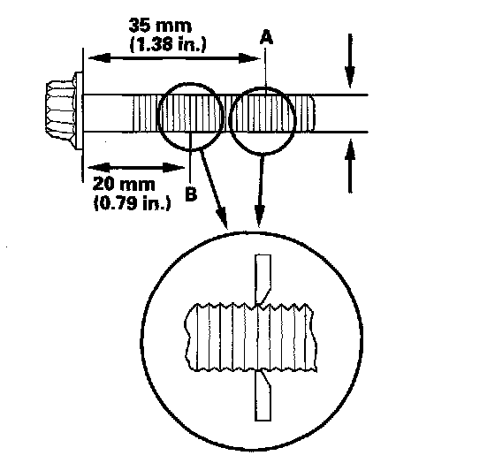

Connecting Rod Bolt Inspection
Connecting Rod Bolt Inspection1. Measure the diameter of each connecting rod bolt at point A and point B.

2. Calculate the difference in diameter between point A and point B.
Point A - Point B = Difference in Diameter
Difference in Diameter
Specification: 0 - 0.1 mm (0 - 0.004 in.)
3. If the difference in diameter is out of specification, replace the connecting rod bolt.